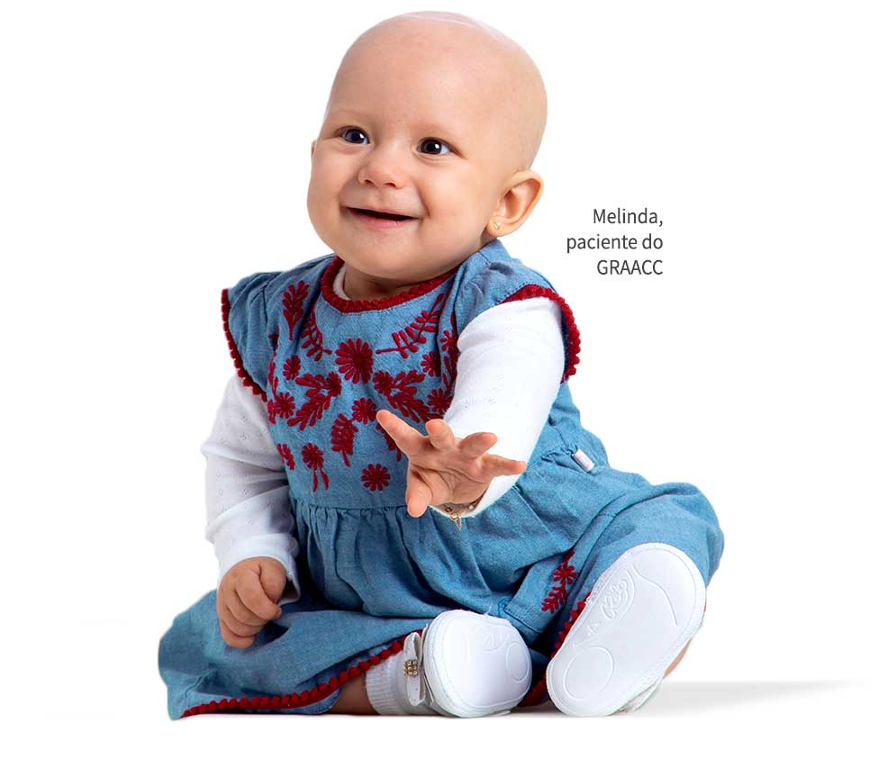
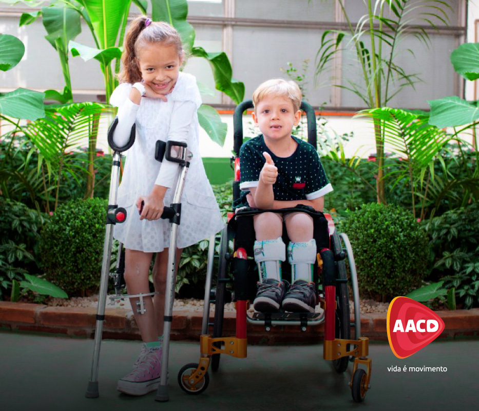

<div class="container-fluid">
    <div class="container">
        <div class="row mt-5 mb-5">
            <div class="col-md-6 mt-3">
                
            </div>
            <div class="col-md-6 text-center mont mt-3">
                <h1>GRAAC</h1>
                <p>
                    GRAAC é uma instituição da cidade de São Paulo que desde 1991 atua no tratamento de câncer de
                    crianças e adolescentes.

                    <b>Como ajudar?</b>
                    Você pode doar roupas, calçados, brinquedos em bom estado diretamente para o bazar do GRAAC no
                    endereço Rua Borges Lagoa, 565 – Vila Clementino
                    Saiba mais: graac.org.br/bazar

                </p>
            </div>

        </div>

        <div class="row mt-5 mb-5">
            <div class="col-md-6 text-center mont">
                <h1>Mães da Favela (CUFA)</h1>
                <p>
                    A CUFA é uma organização criada há 20 anos, a partir da união de jovens de várias favelas do Brasil,
                    em busca de mais espaço para se expressar, e maior visibilidade para essa parte da população.

                    <b>Como ajudar?</b>
                    Com o projeto Mães da Favela, você pode doar cestas básicas para quem mais precisa. A doação é feita
                    em dinheiro, e tem várias opções de valores.
                    Saiba mais: maesdafavela.com.br/doar

                </p>
            </div>
            <div class="col-md-6">
                
            </div>


        </div>
        <div class="row mt-5 mb-5">
            <div class="col-md-6">
                
            </div>
            <div class="col-md-6 text-center mont">
                <h1>AACD</h1>
                <p>
                    A AACD é uma instituição que desde 1950 fornece assistência médico-terapêutica em Ortopedia e
                    Reabilitação. Atende pessoas de todas as idades, em todo o Brasil.

                    <b>Como ajudar?</b>
                    Existem várias formas de doar, mas se você está na cidade de São Paulo, pode doar roupas, calçados,
                    brinquedos para o Bazar Samburá. A entrega pode ser feita diretamente no local, ou agendar a
                    retirada.
                    Saiba mais: aacd.org.br/doe/bazares
                </p>
            </div>
        </div>
    </div>
    <!-- <div class="row">
        <div class="col-md-12 tratamento">
            <div class="container">
                <div class="bg-white col-md-4 mt-3 mb-3 p-3 rounded b-0 shadow-sm">
                    <div class="form-row">
                        <div class="form-group col-md-12">
                            <label for="inputEmail4">Email</label>
                            <input type="email" class="form-control" id="inputEmail4" placeholder="Email">
                        </div>
                    </div>
                    <div class="form-row">
                        <div class="form-group col-md-12">
                            <label for="inputPassword4">Senha</label>
                            <input type="password" class="form-control" id="inputPassword4" placeholder="Senha">
                        </div>
                    </div>
                    <div class="form-row">
                        <div class="form-group col-md-12">
                            <label>Doar cestas basicas </label>
                            <select class="form-control">
                                <option selected>Quantidade</option>
                                <option>1 cesta = R$ 50.00 reais</option>
                                <option>2 cesta = R$ 100.00 reais</option>
                                <option>3 cesta = R$ 150.00 reais</option>
                                <option>4 cesta = R$ 200.00 reais</option>
                            </select>
                        </div>
                    </div>
                    <button type="submit" class="btn btn-outline-primary">Doar</button>
                    <div class="mt-1">
                        <a href="/duvidas"><small>Saiba mais</small></a>
                    </div>
                </div>
            </div>
        </div>
    </div> -->
</div>